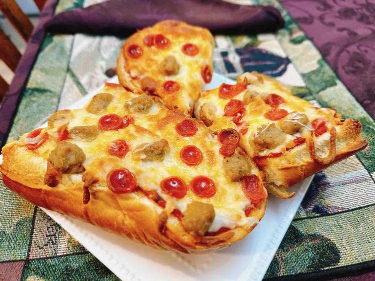

You can't go wrong with a baguette, and this recipe says it all 😍
Description
Take a regular baguette and split lengthwise to create a tasty pizza.
Toppings can be as simple as sauce and cheese, or upgrade with pepperoni and sausage.
Ingredients
1 French baguette
1/2 cup pizza sauce, or as needed
2/3 cup shredded mozzarella cheese
2 ounces cooked and crumbled sausage
2 ounces mini pepperoni slices
Directions
Steps:
Preheat the oven to 375 degrees F (190 degrees C).
Split baguette in half lengthwise. Warm pizza sauce in a microwave-safe bowl until hot, about 45 seconds.
Spread pizza sauce on baguette, sprinkle on cheese, and scatter sausage and pepperoni on top as desired. Place pizza onto a baking tray.
Bake in the preheated oven until cheese is golden, about 18 minutes. Optional step: turn on the oven’s broiler, set a rack 6 inches below the heating element, and broil the pizza for a deeper color, 1 to 2 minutes.